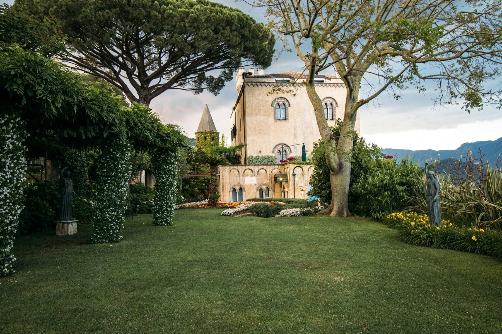
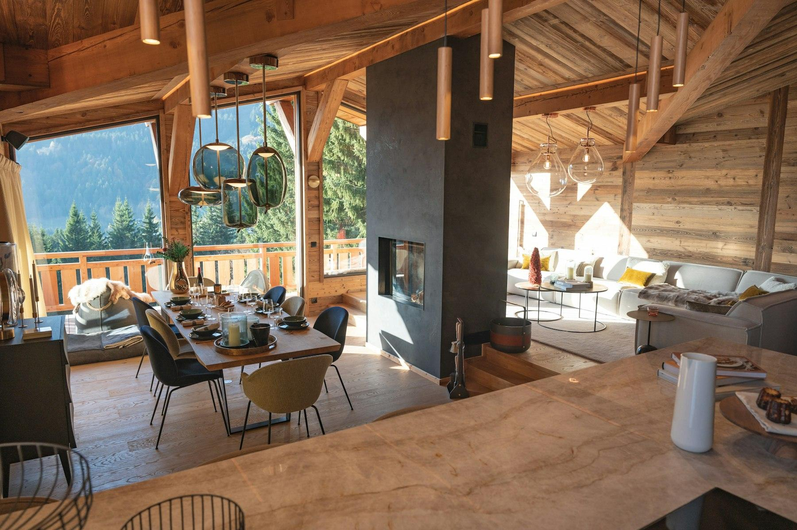

Scheda di presentazione, bozza
Bozza scritta da Dora dalla descrizione del proprietario.
Quanto vale, oggi, la sua casa?
Attici, ville e residenze di pregio a Roma e a Cortina d'Ampezzo. La stima online arriva in due minuti ed è un punto di partenza. La valutazione vera la fa un nostro consulente, di persona, a casa sua.
Immobildream Prestigio
Una casa importante non si mette in vetrina.
Si presenta alle persone giuste.
Lo scriva come lo direbbe a voce: dov'è, quanto è grande, a che piano, cos'ha che le altre non hanno. Dora, l'assistente di Immobildream, prende nota e fa i conti.
Dora è un'assistente AI. Fa una stima, non una perizia: quella spetta al consulente, dopo il sopralluogo.



L’attico.
Roma ai suoi piedi, dal terrazzo.
Il piano nobile.
Soffitti alti, luce da tre lati.
La villa.
Tra i pini, a dieci minuti dal centro.
Lo chalet.
Cortina, con le Dolomiti in salotto.
Per questo teniamo i conti zona per zona. Tocchi una targa: ci sono i valori di oggi per le case di pregio e quello che lì cerca chi compra.
Valori indicativi per immobili di pregio.
Dalle sue parole Dora prepara la prima bozza della scheda. Il consulente la corregge dopo il sopralluogo, con le fotografie vere.
Prima il valore, poi la strategia. Fino al quarto passo non ci deve niente.
La fa Dora, adesso, con quello che le scrive.
Due minutiUn consulente senior viene a vedere la casa e i documenti.
Nel giorno che sceglie leiPrezzo di uscita, tempi, fotografie, pubblicità. Messi per iscritto.
Dopo il sopralluogoLo firma solo se la strategia la convince.
Quando decide lei
Case, negozi, palazzi interi. Attici, ville e piani nobili chiedono più tempo: per questo li segue un consulente senior.
Appartamenti e chalet nella conca ampezzana. Stesso metodo, altra quota.
Nella foto, le Tre Cime di Lavaredo.Niente. Né la stima online né il sopralluogo. L'incarico è un'altra cosa, e lo decide lei dopo aver letto la strategia.
È un intervallo, non un prezzo. Parte dai valori medi della zona e da quello che ci scrive. Il prezzo lo fissa il consulente, dopo aver visto la casa e i documenti.
Immobildream, e basta. Servono per richiamarla all'ora che ha scelto.
Sì. Lo dice al consulente e la casa viene proposta solo ad acquirenti selezionati: niente cartello, niente annuncio sui portali.
A Cortina d'Ampezzo seguiamo già immobili di pregio. Per il resto ci scriva: rispondiamo caso per caso.
Due minuti con Dora per una prima stima. Poi un consulente a casa sua, per la valutazione vera. Gratuita e senza impegno.